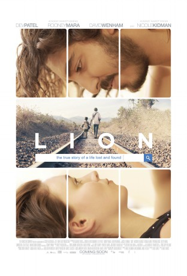

#6502 Lion: Der lange Weg nach Hause
Alternativ: Lion
Auszeichnungen: für 6 Oscars nominiert 2 BAFTA-Awards gewonnen
 
 IMDB-Wertung: 8.1 / 10
IMDB-Wertung: 8.1 / 10  Metascore: 0
Metascore: 0 
In 1986, Saroo was a five-year-old child in India of a poor but happy rural family. On a trip with his brother, Saroo soon finds himself alone and trapped in a moving decommissioned passenger train that takes him to Calcutta, 1500 miles away from home. Now totally lost in an alien urban environment and too young to identify either himself or his home to the authorities, Saroo struggles to survive as a street child until he is sent to an orphanage. Soon, Saroo is selected to be adopted by the Brierley family in Tasmania, where he grows up in a loving, prosperous home. However, for all his material good fortune, Saroo finds himself plagued by his memories of his lost family in his adulthood and tries to search for them even as his guilt drives him to hide this quest from his adoptive parents and his girlfriend. Only when he has an epiphany does he realize not only the answers he needs, but also the steadfast love that he has always had with all his loved ones in both worlds.
Jahr: 2016
Dauer: 118 Minuten
FSK: 12
Land: England Studio: Universum FilmTonspuren: DTS - ,
Untertitel: Deutsch,
Auflösung: 1080p (1920x800) Größe: 6348 MB
Genre: Drama, Biographie
Regisseur: Garth Davis
Drehbuch: Saroo Brierley
Soundtrack:
Darsteller:
- Sunny Pawar als Young Saroo
- Abhishek Bharate als Guddu
- Priyanka Bose als Kamla
- Tannishtha Chatterjee als Noor
 Nawazuddin Siddiqui als Rama
Nawazuddin Siddiqui als Rama- Koushik Sen als Police Official
- Deepti Naval als Mrs. Sood
- Menik Gooneratne als Swarmina
 David Wenham als John Brierley
David Wenham als John Brierley Nicole Kidman als Sue Brierley
Nicole Kidman als Sue Brierley Dev Patel als Saroo Brierley
Dev Patel als Saroo Brierley- Benjamin Rigby als Waiter
- Divian Ladwa als Mantosh Brierley
 Rooney Mara als Lucy
Rooney Mara als Lucy- Pallavi Sharda als Prama
- Sachin Joab als Bharat
- Arka Das als Sami
- Emilie Cocquerel als Annika
- Saroo Brierley als Himself , uncredited
- Tegan Crowley als Workmate #1 , uncredited
- Eamon Farren als Luke , uncredited
- Belinda Misevski als Lucy's Friend , uncredited
- Lucy Moir als Lucy's Friend , uncredited
- Anna Samson als Cute Bar Maid , uncredited
- Alexandra Schepisi als Qantas Attendant , uncredited
- Khushi Solanki als Young Shekila
- Shankar Nisode als Shankar
- Riddhi Sen als Café Man
- Rita Boy als Amita
- Udayshankar Pal als Liluah Teacher
- Surojit Das als Shonedeep / Haunted Boy
- Keshav Jadhav als Young Mantosh
- Todd Sampson als Provost
- Daniela Farinacci als Tutor
- Vinod Chauhan als Merchant
- Babli Pandey als Woman With Baby
- Madhukar Narlwade als English Speaking Man
- Rohini Kargaiya als Shekila
- Tony Skinner als Ryan McLean
- John Brierley als Himself , uncredited
- Sue Brierley als Herself , uncredited
- Ethan Korver als O'Brien Salisbury , uncredited
- Kyle Marasciulo als Paul Orya , uncredited
Datei: X:\2016(G-M)\Lion Der lange Weg nach Hause (2016, FSK12, 1920x800).mkv seit 29.06.2017
Festplatte: HD 2016(A-Z)
 Es gibt insgesamt 164 Filme in der Gruppe '2016(G-M)'
Es gibt insgesamt 164 Filme in der Gruppe '2016(G-M)'